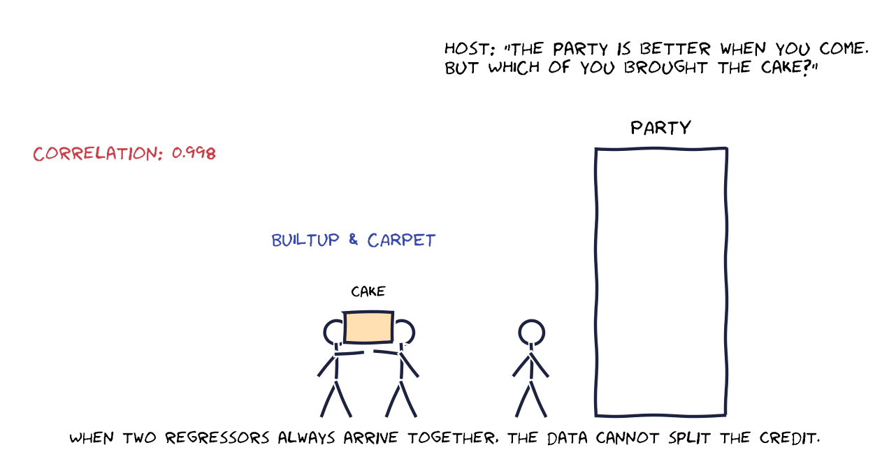

Two Friends Who Always Arrive Together: Multicollinearity, and the Goldsmith Who Invented Econometrics
Anyone who has hunted for a flat in an Indian city knows the two numbers on every listing: built-up area and carpet area. Built-up area includes the walls and balcony; carpet area is the floor you can actually lay a carpet on. Carpet area is usually around three-quarters to four-fifths of built-up area.
Both surely matter for the rent. So let's put both in a regression and see which one matters more. The answer, it turns out, is "neither", and "both", at the same time.
Foundations · Post 8 of 8
1. Omitted variables · 2. Spurious regression · 3. R-squared · 4. Measurement error · 5. Heteroskedasticity · 6. Dummy variables · 7. Structural breaks · 8. Multicollinearity
Data: blog_datasets.xlsx, sheet P8_multicol · Simulated cross-section, 60 flats · EViews program

The goldsmith, the beekeeper, the first Nobel laureate
The word multicollinearity is usually credited to the Norwegian economist Ragnar Frisch, from his 1934 book Statistical Confluence Analysis by Means of Complete Regression Systems. Frisch is one of the most colourful characters in our story.
- He trained as a goldsmith, apprenticing in Oslo and becoming a partner in his family's workshop, while also studying economics.
- His great hobby was beekeeping, and he carried out genetic studies on his bees.
- He coined the word "econometrics" in 1926, and later "microeconomics" and "macroeconomics".
- He was a founder of the Econometric Society in 1930 and edited its journal, Econometrica, for its first 21 years.
- In 1969 he shared the first ever Nobel Prize in Economics, with Jan Tinbergen.
So every time you open an econometrics textbook, you are reading a subject named by a goldsmith who kept bees.
The data
Sixty flats. For each: monthly RENT (₹ thousand), BUILTUP area and CARPET area (both in sq ft).
ls rent c builtup carpet
Dependent Variable: RENT
Method: Least Squares
Date: 10/27/26 Time: 21:45
Sample: 1 60
Included observations: 60
==============================================================================
Variable Coefficient Std. Error t-Statistic Prob.
==============================================================================
C -0.712800 1.395905 -0.510636 0.6116
BUILTUP 0.006876 0.016366 0.420123 0.6760
CARPET 0.007881 0.020938 0.376396 0.7080
==============================================================================
R-squared 0.741175 Mean dependent var 16.32833
Adjusted R-squared 0.732094 S.D. dependent var 6.147622
S.E. of regression 3.181988 Akaike info criterion 5.201596
Sum squared resid 577.1278 Schwarz criterion 5.306313
Log likelihood -153.0479 Hannan-Quinn criter. 5.242557
F-statistic 81.61314 Durbin-Watson stat 1.837909
Prob(F-statistic) 0.000000
==============================================================================
A genuine puzzle. The two t-statistics are 0.42 and 0.38. Neither measure of size is anywhere near significant. By the usual reading, the size of a flat does not affect its rent.
Now look at the bottom of the same table. The F-statistic is 81.6 with p = 0.000000, and the R-squared is 0.74. The model as a whole explains rent very well.
So the regression is saying: "Size matters enormously. I just can't tell you which measure of size." That pattern, insignificant t-statistics with a highly significant F-statistic, is the classic signature of multicollinearity.
What's going on
Correlation
RENT BUILTUP CARPET
RENT 1.000000 0.860542 0.860450
BUILTUP 0.860542 1.000000 0.998057
CARPET 0.860450 0.998057 1.000000
BUILTUP and CARPET have a correlation of 0.998. To separate their effects, OLS needs flats where one is large and the other small. There are hardly any. When two regressors always arrive together, the data cannot say which deserves the credit.
Derivation: why the standard errors explode (click to open)
With two regressors, the variance of the OLS coefficient on \(x_1\) is
where \(r_{12}\) is the correlation between the two regressors. The first part is what you would get with \(x_1\) alone. The second part, \(1/(1 - r_{12}^2)\), is the variance inflation factor. With \(r_{12} = 0.998\):
The variance is 257 times larger than it would be with unrelated regressors, so the standard error is about \(\sqrt{257} \approx 16\) times larger. The coefficients are still unbiased; they are just extremely imprecise.
Diagnosis: four instruments
1. Variance inflation factors
View → Coefficient Diagnostics → Variance Inflation Factors.
Variance Inflation Factors
Date: 10/27/26 Time: 21:45
Sample: 1 60
Included observations: 60
==============================================================================
Coefficient Uncentered Centered
Variable Variance VIF VIF
==============================================================================
C 1.948551 11.54692 NA
BUILTUP 0.000268 2973.339 257.5242
CARPET 0.000438 2966.174 257.5242
==============================================================================
Read the Centered VIF column: 257.5. A common rule of thumb flags anything above 10.
2. Klein's rule
Lawrence Klein, who received the Nobel Prize in 1980 for building econometric models of whole economies, offered a simple rule: multicollinearity is troublesome if the correlation between two regressors is higher than the multiple correlation of the regression itself, \(R = \sqrt{R^2}\). Here \(r_{12} = 0.998\) and \(R = \sqrt{0.741} = 0.861\). Troublesome.
3. Condition index (Belsley, Kuh and Welsch, 1980)
David Belsley, Edwin Kuh and Roy Welsch looked at the eigenvalues of the (scaled) \(X'X\) matrix. If one eigenvalue is tiny, some combination of the regressors is nearly constant: a near-exact linear relationship. The condition index is \(\sqrt{\lambda_{\max}/\lambda_j}\). Values above 30 signal serious trouble. (View → Coefficient Diagnostics → Coefficient Variance Decomposition.)
| Dimension | Eigenvalue | Condition index | Share of Var(C) | Share of Var(BUILTUP) | Share of Var(CARPET) |
|---|---|---|---|---|---|
| 1 | 2.941 | 1.0 | 0.01 | 0.00 | 0.00 |
| 2 | 0.059 | 7.1 | 0.99 | 0.00 | 0.00 |
| 3 | 0.00017 | 132.1 | 0.00 | 0.999 | 0.999 |
The third dimension has a condition index of 132, and it accounts for 99.9% of the variance of both the BUILTUP and CARPET coefficients. The diagnosis even tells you which variables are involved.
4. The joint test
The t-tests ask: "Does BUILTUP matter, holding CARPET fixed?" A strange question: in real life you almost never change one without the other. The sensible question is "does size matter at all?". View → Coefficient Diagnostics → Wald Test, c(2)=0, c(3)=0:
Wald Test:
Equation: EQ8A
==============================================================================
Test Statistic Value df Probability
==============================================================================
F-statistic 81.61314 (2, 57) 0.0000
Chi-square 163.2263 2 0.0000
==============================================================================
Emphatically yes. Together, the two size variables are hugely significant.
Treatment: what helps and what doesn't
Remedy 1: keep one measure
ls rent c builtup
Dependent Variable: RENT
Method: Least Squares
Date: 10/27/26 Time: 21:45
Sample: 1 60
Included observations: 60
==============================================================================
Variable Coefficient Std. Error t-Statistic Prob.
==============================================================================
C -0.707777 1.385475 -0.510855 0.6114
BUILTUP 0.013024 0.001012 12.86601 0.0000
==============================================================================
R-squared 0.740532 Mean dependent var 16.32833
Adjusted R-squared 0.736058 S.D. dependent var 6.147622
S.E. of regression 3.158356 Akaike info criterion 5.170745
Sum squared resid 578.5622 Schwarz criterion 5.240557
Log likelihood -153.1224 Hannan-Quinn criter. 5.198052
F-statistic 165.5343 Durbin-Watson stat 1.847104
Prob(F-statistic) 0.000000
==============================================================================
The standard error drops from 0.0164 to 0.0010, and the t-statistic leaps to 12.9. R-squared barely moves (0.741 to 0.741). An extra 100 sq ft of built-up area adds about ₹1,300 a month to the rent.
But be honest about what this coefficient now means. It is the effect of built-up area together with the carpet area that comes with it. Dropping CARPET is fine for predicting rent; it would be wrong to claim we have isolated the value of walls. (Notice the link to Post 1: dropping a correlated variable always shifts its effect onto the one you keep.)
Remedy 2: combine them
If both measure "size", make a single size index. ls rent c builtup+carpet
Dependent Variable: RENT
Method: Least Squares
Date: 10/27/26 Time: 21:45
Sample: 1 60
Included observations: 60
==============================================================================
Variable Coefficient Std. Error t-Statistic Prob.
==============================================================================
C -0.713424 1.383638 -0.515615 0.6081
BUILTUP+CARPET 0.007317 0.000568 12.88748 0.0000
==============================================================================
R-squared 0.741172 Mean dependent var 16.32833
Adjusted R-squared 0.736709 S.D. dependent var 6.147622
S.E. of regression 3.154458 Akaike info criterion 5.168276
Sum squared resid 577.1351 Schwarz criterion 5.238087
Log likelihood -153.0483 Hannan-Quinn criter. 5.195583
F-statistic 166.0871 Durbin-Watson stat 1.838597
Prob(F-statistic) 0.000000
==============================================================================
Each extra square foot of combined area adds about ₹7.3 a month, with t = 12.9. This assumes both kinds of area are worth the same per square foot, which the data cannot contradict.
Remedy 3: ridge regression (a peek)
Arthur Hoerl and Robert Kennard proposed ridge regression in 1970. It adds a small penalty that shrinks the coefficients towards zero:
The penalty \(\lambda\) makes the matrix invertible and stable, at the price of a small bias. With standardised variables, OLS gives the two areas effects of 2.77 and 2.48; a modest penalty pulls them together to about 2.57 and 2.56, sharing the credit equally. Ridge is the ancestor of many modern machine learning methods, such as the lasso.
Things that do not help
- Dropping a variable only because its t-statistic is small, when theory says it belongs and it isn't a near-duplicate.
- Hoping a fancier estimation method will create information the data don't contain.
What really helps is more information: new data with genuine variation (old buildings with thick walls, new ones with thin walls), or outside knowledge about one of the coefficients.
The lesson
Multicollinearity is not a mistake in your model. It is a shortage of information in your data. The coefficients are still unbiased; they are just blurry. Insignificant t-statistics with a highly significant F-statistic is its signature; VIFs and condition indices are its X-ray.
Something to think about
A researcher regresses a child's test score on the mother's years of schooling and the father's years of schooling. Neither is significant, but the F-test is. A journalist writes: "Study finds parents' education doesn't matter." Write a two-sentence letter to the editor explaining what went wrong, and suggest one remedy from this post. Leave it in the comments.